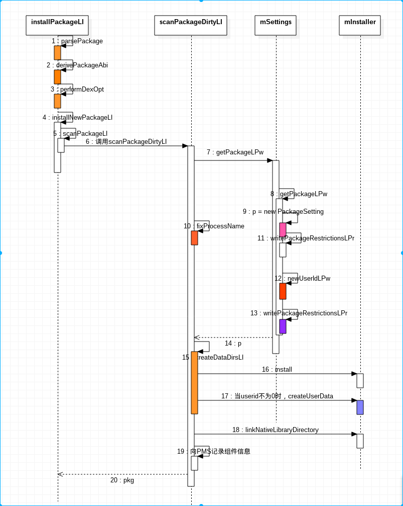

1. Android 6 PMS installation APK next article
Android core service
Android underlying development
Install an apk into: check permissions, copy files, and install them in the
app. The first two steps were analyzed before, and now the analysis of the app's
load is started.
In this step, the execution file of the oat format of converting the dex into
the ART virtual machine is completed, and the data sandbox directory is created
for the application, and finally the application information is loaded into the
data structure of the PMS.
In the startCopy method of HandlerParams called when MCS_BOUND is processed
earlier
final boolean startCopy() {
boolean res;
try {
...........................
if (++mRetries > MAX_RETRIES) {
....................................................
return false;
} else {
handleStartCopy();
res = true;
}
} catch (RemoteException e) {
..............................
}
handleReturnCode();
return res;
}
You can know that when the file is copied, the handleReturnCode method of InstallParams is called:
void handleReturnCode() {
// If mArgs is null, then MCS couldn't be reached. When it
// reconnects, it will try again to install. At that point, this
// will succeed.
if (mArgs != null) {
processPendingInstall(mArgs, mRet);
}
}
code show as below:
private void processPendingInstall(final InstallArgs args, final int currentStatus) {
// Queue up an async operation since the package installation may take a little while.
mHandler.post(new Runnable() {
public void run() {
mHandler.removeCallbacks(this);
// Result object to be returned
PackageInstalledInfo res = new PackageInstalledInfo();
res.returnCode = currentStatus;
res.uid = -1;
res.pkg = null;
res.removedInfo = new PackageRemovedInfo();
if (res.returnCode == PackageManager.INSTALL_SUCCEEDED) {
//Under normal circumstances, nothing will be done.
args.doPreInstall(res.returnCode);
synchronized (mInstallLock) {
installPackageLI(args, res);
}
args.doPostInstall(res.returnCode, res.uid);
}
.....................................
/* Omit code about cloud backup */
.....................................
if (!doRestore) {
// No restore possible, or the Backup Manager was mysteriously not
// available -- just fire the post-install work request directly.
if (DEBUG_INSTALL) Log.v(TAG, "No restore - queue post-install for " + token);
Message msg = mHandler.obtainMessage(POST_INSTALL, token, 0);
mHandler.sendMessage(msg);
}
}
});
}
A message is posted in the processPendingInstall() method so that the
installation process continues in an asynchronous manner. In the post message,
the first is to call installPackageLI () to load the application, the next large
piece of code is in the device backup operation, the backup is done through the
BackupManagerService, here is not analyzed. After the backup is complete,
continue processing by sending a POST_INSTALL message.
doPreInstall() generally does not do anything. Then look at the
installPackageLI() method, the code is very long, so it is still parsed by
segmentation.
Private void installPackageLI(InstallArgs args, PackageInstalledInfo res) {
/ / Get installFlags, which records where the app needs to be installed
final int installFlags = args.installFlags;
// package name of the installer
final String installerPackageName = args.installerPackageName;
// related to sd card installation, generally null
final String volumeUuid = args.volumeUuid;
// I have previously copied the apk to the temporary stage folder /data/app/vmdl<installation call id>.tmp/ this directory
final File tmpPackageFile = new File(args.getCodePath());
// No setting INSTALL_FORWARD_LOCK
final boolean forwardLocked = ((installFlags & PackageManager.INSTALL_FORWARD_LOCK) != 0);
// Whether to install to external storage
final boolean onExternal = (((installFlags & PackageManager.INSTALL_EXTERNAL) != 0)
|| (args.volumeUuid != null));
// Initialize the replacement flag to false
Boolean replace = false;
/ / Set the browsing parameters
int scanFlags = SCAN_NEW_INSTALL | SCAN_UPDATE_SIGNATURE;
// We are not a mobile app, so it is null, don't take this code
if (args.move != null) {
// moving a complete application; perfom an initial scan on the new install location
scanFlags |= SCAN_INITIAL;
}
/ / Initialize the return code
// Result object to be returned
res.returnCode = PackageManager.INSTALL_SUCCEEDED;
Here is the work of doing some initialization values. See the above note for
details.
if (DEBUG_INSTALL) Slog.d(TAG, "installPackageLI: path=" + tmpPackageFile);
// Retrieve PackageSettings and parse package
// Set parsing apk flags
final int parseFlags = mDefParseFlags | PackageParser.PARSE_CHATTY
| (forwardLocked ? PackageParser.PARSE_FORWARD_LOCK : 0)
| (onExternal ? PackageParser.PARSE_EXTERNAL_STORAGE : 0);
// Create a parser
PackageParser pp = new PackageParser();
pp.setSeparateProcesses(mSeparateProcesses);
// Get screen parameters
pp.setDisplayMetrics(mMetrics);
final PackageParser.Package pkg;
try {
// Start parsing apk, pay attention to passing tmpPackageFile as a folder at this time
pkg = pp.parsePackage(tmpPackageFile, parseFlags);
} catch (PackageParserException e) {
res.setError("Failed parse during installPackageLI", e);
return;
}
// Mark that we have an install time CPU ABI override.
pkg.cpuAbiOverride = args.abiOverride;
String pkgName = res.name = pkg.packageName;
if ((pkg.applicationInfo.flags&ApplicationInfo.FLAG_TEST_ONLY) != 0) {
if ((installFlags & PackageManager.INSTALL_ALLOW_TEST) == 0) {
res.setError(INSTALL_FAILED_TEST_ONLY, "installPackageLI");
return;
}
}
The main thing here is to parse the APK, which is to parse the
AndroidMainifest.xml file and record the result in the PackageParser.Package. I
have already explained in detail how to parse an APK, so I won't go into details
here.
Next is to collect the signature information of apk, the code is as follows:
try {
pp.collectCertificates(pkg, parseFlags);
pp.collectManifestDigest(pkg);
} catch (PackageParserException e) {
res.setError("Failed collect during installPackageLI", e);
return;
}
If the installer has previously passed in a manifest file, then the parsed
manifest file is compared to the incoming one. The installer did pass in a list,
and the packageInstallerActivity also parsed the apk. At that time, the list was
recorded and passed in here. Here is another step to judge that the two are the
same apk.
/* If the installer passed in a manifest digest, compare it now. */
if (args.manifestDigest != null) {
if (DEBUG_INSTALL) {
final String parsedManifest = pkg.manifestDigest == null ? "null"
: pkg.manifestDigest.toString();
Slog.d(TAG, "Comparing manifests: " + args.manifestDigest.toString() + " vs. "
+ parsedManifest);
}
if (!args.manifestDigest.equals(pkg.manifestDigest)) {
res.setError(INSTALL_FAILED_PACKAGE_CHANGED, "Manifest digest changed");
return;
}
} else if (DEBUG_INSTALL) {
final String parsedManifest = pkg.manifestDigest == null
? "null" : pkg.manifestDigest.toString();
Slog.d(TAG, "manifestDigest was not present, but parser got: " + parsedManifest);
}
Continue to analyze installPackageLI:
// Check if installing already existing package
// If installing an existing application, the PackageInstaller app installer will set INSTALL_REPLACE_EXISTING in installFlags
if ((installFlags & PackageManager.INSTALL_REPLACE_EXISTING) != 0) {
/ / Look at the package name of the apk to be replaced whether the original package name exists
// When the app upgrade causes the package names to be inconsistent, the record needs to be the original package name.
// So here we have to check if the app to be overwritten is like this. If so, set the package name to the old package name.
String oldName = mSettings.mRenamedPackages.get(pkgName);
if (pkg.mOriginalPackages != null
&& pkg.mOriginalPackages.contains(oldName)
&& mPackages.containsKey(oldName)) {
// This package is derived from an original package,
// and this device has been updating from that original
// name. We must continue using the original name, so
// rename the new package here.
pkg.setPackageName(oldName);
pkgName = pkg.packageName;
Replace = true;
if (DEBUG_INSTALL) Slog.d(TAG, "Replacing existing renamed package: oldName="
+ oldName + " pkgName=" + pkgName);
} else if (mPackages.containsKey(pkgName)) {
// This package, under its official name, already exists
// on the device; we should replace it.
Replace = true;
if (DEBUG_INSTALL) Slog.d(TAG, "Replace existing pacakge: " + pkgName);
}
// Prevent apps opting out from runtime permissions
/ / Check the new app compiled when the target target version is lower than 6.0, and the original app compiled when the target is selected 6.0,
/ / When an app is compiled according to 6.0, you need to parse the permissions of the app according to the rules of 6.0.
if (replace) {
PackageParser.Package oldPackage = mPackages.get(pkgName);
final int oldTargetSdk = oldPackage.applicationInfo.targetSdkVersion;
final int newTargetSdk = pkg.applicationInfo.targetSdkVersion;
if (oldTargetSdk > Build.VERSION_CODES.LOLLIPOP_MR1
&& newTargetSdk <= Build.VERSION_CODES.LOLLIPOP_MR1) {
res.setError(PackageManager.INSTALL_FAILED_PERMISSION_MODEL_DOWNGRADE,
"Package " + pkg.packageName + " new target SDK " + newTargetSdk
+ " doesn't support runtime permissions but the old"
+ " target SDK " + oldTargetSdk + " does.");
Return;
}
}
}
// If ps is not null, it also means that a program with the same package name already exists.
// that is, it still handles the situation of overwriting the installation.
// This is mainly to verify the signature of the package name. If it is inconsistent, it cannot be overwritten. In addition, the version number cannot be lower than the installation. Otherwise, it cannot be installed.
PackageSetting ps = mSettings.mPackages.get(pkgName);
if (ps != null) {
if (DEBUG_INSTALL) Slog.d(TAG, "Existing package: " + ps);
// Quick sanity check that we're signed correctly if updating;
// we'll check this again later when scanning, but we want to
// bail early here before tripping over redefined permissions.
if (shouldCheckUpgradeKeySetLP(ps, scanFlags)) {
if (!checkUpgradeKeySetLP(ps, pkg)) {
res.setError(INSTALL_FAILED_UPDATE_INCOMPATIBLE, "Package "
+ pkg.packageName + " upgrade keys do not match the "
+ "previously installed version");
Return;
}
} else {
Try {
verifySignaturesLP(ps, pkg);
} catch (PackageManagerException e) {
res.setError(e.error, e.getMessage());
Return;
}
}
oldCodePath = mSettings.mPackages.get(pkgName).codePathString;
if (ps.pkg != null && ps.pkg.applicationInfo != null) {
systemApp = (ps.pkg.applicationInfo.flags &
ApplicationInfo.FLAG_SYSTEM) != 0;
}
res.origUsers = ps.queryInstalledUsers(sUserManager.getUserIds(), true);
}
Here is mainly to set some variables when overwriting the installation.
Continue to analyze, the next step is to conduct a preliminary check on the
permissions defined by apk:
// Check whether the newly-scanned package wants to define an already-defined perm
int N = pkg.permissions.size();
for (int i = N-1; i >= 0; i--) {
PackageParser.Permission perm = pkg.permissions.get(i);
BasePermission bp = mSettings.mPermissions.get(perm.info.name);
if (bp != null) {
// If the defining package is signed with our cert, it's okay. This
// also includes the "updating the same package" case, of course.
// "updating same package" could also involve key-rotation.
final boolean sigsOk;
if (bp.sourcePackage.equals(pkg.packageName)
&& (bp.packageSetting instanceof PackageSetting)
&& (shouldCheckUpgradeKeySetLP((PackageSetting) bp.packageSetting,
scanFlags))) {
sigsOk = checkUpgradeKeySetLP((PackageSetting) bp.packageSetting, pkg);
} else {
sigsOk = compareSignatures(bp.packageSetting.signatures.mSignatures,
pkg.mSignatures) == PackageManager.SIGNATURE_MATCH;
}
if (!sigsOk) {
// If the owning package is the system itself, we log but allow
// install to proceed; we fail the install on all other permission
// redefinitions.
if (!bp.sourcePackage.equals("android")) {
res.setError(INSTALL_FAILED_DUPLICATE_PERMISSION, "Package "
+ pkg.packageName + " attempting to redeclare permission "
+ perm.info.name + " already owned by " + bp.sourcePackage);
res.origPermission = perm.info.name;
res.origPackage = bp.sourcePackage;
return;
} else {
Slog.w(TAG, "Package " + pkg.packageName
+ " attempting to redeclare system permission "
+ perm.info.name + "; ignoring new declaration");
pkg.permissions.remove(i);
}
}
}
}
The function of this code is to check whether all the permissions defined in the
apk have been defined by other applications. If the permissions defined by the
system application are redefined, then the permission defined by the app is
ignored. If you redefine the permissions of a non-system application, then this
installation will return with a failure.
Continue to analyze, when an app is a system application, but wants to install
in external storage, then an error is reported.
if (systemApp && onExternal) {
// Disable updates to system apps on sdcard
res.setError(INSTALL_FAILED_INVALID_INSTALL_LOCATION,
"Cannot install updates to system apps on sdcard");
return;
}
This means that the system app cannot be installed to external storage.
Continue to analyze:
// We are not on the mobile app, so don't go this branch
if (args.move != null) {
// We did an in-place move, so dex is ready to roll
scanFlags |= SCAN_NO_DEX;
scanFlags |= SCAN_MOVE;
synchronized (mPackages) {
final PackageSetting ps = mSettings.mPackages.get(pkgName);
if (ps == null) {
res.setError(INSTALL_FAILED_INTERNAL_ERROR,
"Missing settings for moved package " + pkgName);
}
// We moved the entire application as-is, so bring over the
// previously derived ABI information.
pkg.applicationInfo.primaryCpuAbi = ps.primaryCpuAbiString;
pkg.applicationInfo.secondaryCpuAbi = ps.secondaryCpuAbiString;
}
} else if (!forwardLocked && !pkg.applicationInfo.isExternalAsec()) {
//Go this branch
// Enable SCAN_NO_DEX flag to skip dexopt at a later stage
// Set SCAN_NO_DEX so that dexopt will not be executed at this stage
scanFlags |= SCAN_NO_DEX;
Try {
derivePackageAbi(pkg, new File(pkg.codePath), args.abiOverride,
True /* extract libs */);
} catch (PackageManagerException pme) {
Slog.e (TAG, "Error deriving application ABI", pme);
res.setError(INSTALL_FAILED_INTERNAL_ERROR, "Error deriving application ABI");
Return;
}
// Run dexopt before old package gets removed, to minimize time when app is unavailable
int result = mPackageDexOptimizer
.performDexOpt(pkg, null /* instruction sets */, false /* forceDex */,
False /* defer */, false /* inclDependencies */);
if (result == PackageDexOptimizer.DEX_OPT_FAILED) {
res.setError(INSTALL_FAILED_DEXOPT, "Dexopt failed for " + pkg.codePath);
Return;
}
}
The derivePackageAbi() method is also very important. It mainly completes the so
library path setting of apk and the value of the primary and secondary abi.
/**
* Derive the ABI of a non-system package located at {@code scanFile}. This information
* is derived purely on the basis of the contents of {@code scanFile} and
* {@code cpuAbiOverride}.
*
* If {@code extractLibs} is true, native libraries are extracted from the app if required.
*/
public void derivePackageAbi(PackageParser.Package pkg, File scanFile,
String cpuAbiOverride, boolean extractLibs)
Throws PackageManagerException {
/ / Here is the first call, mainly to determine the following three fields in the applicationInfo in pkg
// nativeLibraryRootDir /data/app/vmdl<return id>.tmp/lib
// nativeLibraryRootRequiresIsa is true, the third-party app installed by the user, this field is true, indicating that you need to prefix in lib/, such as arm, arm64, etc.
// nativeLibraryDir :/data/app/vmdl<callback id>.tmp/lib/<prefix>
setNativeLibraryPaths(pkg);
// We would never need to extract libs for forward-locked and external packages,
// since the container service will do it for us. We shouldn't attempt to
// extract libs from system app when it was not updated.
if (pkg.isForwardLocked() || isExternal(pkg) ||
(isSystemApp(pkg) && !pkg.isUpdatedSystemApp()) ) {
extractLibs = false;
}
final String nativeLibraryRootStr = pkg.applicationInfo.nativeLibraryRootDir;
// For a third-party app installed by the user, this flag is true, indicating that you want to add "arm" or "arm64" or "x86" after the nativeLibraryRootStr path.
// This type of prefix, please refer to setNativeLibraryPaths() for specific reasons.
final boolean useIsaSpecificSubdirs = pkg.applicationInfo.nativeLibraryRootRequiresIsa;
NativeLibraryHelper.Handle handle = null;
Try {
Handle = NativeLibraryHelper.Handle.create(scanFile);
// TODO(multiArch): This can be null for apps that didn't go through the
// usual installation process. We can calculate it again, like we
// do during install time.
//
// TODO(multiArch): Why do we need to rescan ASEC apps again ? It seems totally
// unnecessary.
final File nativeLibraryRoot = new File(nativeLibraryRootStr);
// Null out the abis so that they can be recalculated.
pkg.applicationInfo.primaryCpuAbi = null;
pkg.applicationInfo.secondaryCpuAbi = null;
if (isMultiArch(pkg.applicationInfo)) {
// Warn if we've set an abiOverride for multi-lib packages..
// By definition, we need to copy both 32 and 64 bit libraries for
// such packages.
// cpuAbiOverride is not valid for apk with multiple so library folders
if (pkg.cpuAbiOverride != null
&& !NativeLibraryHelper.CLEAR_ABI_OVERRIDE.equals(pkg.cpuAbiOverride)) {
Slog.w(TAG, "Ignoring abiOverride for multi arch application.");
}
int abi32 = PackageManager.NO_NATIVE_LIBRARIES;
int abi64 = PackageManager.NO_NATIVE_LIBRARIES;
if (Build.SUPPORTED_32_BIT_ABIS.length > 0) {
if (extractLibs) {
// Here again, if the so library timestamp in lib in apk does not change, it will not be copied, because it has been copied before.
// Only copy again when the so library changes
Abi32 = NativeLibraryHelper.copyNativeBinariesForSupportedAbi(handle,
nativeLibraryRoot, Build.SUPPORTED_32_BIT_ABIS,
useIsaSpecificSubdirs);
} else {
Abi32 = NativeLibraryHelper.findSupportedAbi(handle, Build.SUPPORTED_32_BIT_ABIS);
}
}
maybeThrowExceptionForMultiArchCopy(
"Error unpackaging 32 bit native libs for multiarch app.", abi32);
if (Build.SUPPORTED_64_BIT_ABIS.length > 0) {
if (extractLibs) {
// Here again, if the so library timestamp in lib in apk does not change, it will not be copied, because it has been copied before.
// Only copy again when the so library changes
Abi64 = NativeLibraryHelper.copyNativeBinariesForSupportedAbi(handle,
nativeLibraryRoot, Build.SUPPORTED_64_BIT_ABIS,
useIsaSpecificSubdirs);
} else {
Abi64 = NativeLibraryHelper.findSupportedAbi(handle, Build.SUPPORTED_64_BIT_ABIS);
}
}
maybeThrowExceptionForMultiArchCopy(
"Error unpackaging 64 bit native libs for multiarch app.", abi64);
if (abi64 >= 0) {
// If the so library supports 64-bit abi, and the system is also 64-bit, Message1
// Set the main abi to the value of the abi64 index in the list of ro.product.cpu.abilist64
pkg.applicationInfo.primaryCpuAbi = Build.SUPPORTED_64_BIT_ABIS[abi64];
}
if (abi32 >= 0) {
final String abi = Build.SUPPORTED_32_BIT_ABIS[abi32];
if (abi64 >= 0) {
// When the system is 64 bit. And apk contains a 64-bit library, and also contains a 32-bit library.
// Then set the secondary abi to the value of the abi32 index in the list of ro.product.cpu.abilist32
pkg.applicationInfo.secondaryCpuAbi = abi;
} else {
// If the app has only 32-bit libraries, then put
// The main abi is set to the value of the abi32 index in the list of ro.product.cpu.abilist32
pkg.applicationInfo.primaryCpuAbi = abi;
}
}
Next, call the following code to perform the dexopt operation:
// Run dexopt before old package gets removed, to minimize time when app is unavailable
int result = mPackageDexOptimizer
.performDexOpt(pkg, null /* instruction sets */, false /* forceDex */,
false /* defer */, false /* inclDependencies */);
if (result == PackageDexOptimizer.DEX_OPT_FAILED) {
res.setError(INSTALL_FAILED_DEXOPT, "Dexopt failed for " + pkg.codePath);
return;
}
code show as below:
int performDexOpt(PackageParser.Package pkg, String[] instructionSets,
boolean forceDex, boolean defer, boolean inclDependencies) {
ArraySet<String> done;
if (inclDependencies && (pkg.usesLibraries != null || pkg.usesOptionalLibraries != null)) {
done = new ArraySet<String>();
done.add(pkg.packageName);
} else {
// Take this branch
done = null;
}
synchronized (mPackageManagerService.mInstallLock) {
final boolean useLock = mSystemReady;
if (useLock) {
mDexoptWakeLock.setWorkSource(new WorkSource(pkg.applicationInfo.uid));
mDexoptWakeLock.acquire();
}
try {
// -----------------Call the following method
return performDexOptLI(pkg, instructionSets, forceDex, defer, done);
} finally {
if (useLock) {
mDexoptWakeLock.release();
}
}
}
}
Private int performDexOptLI(PackageParser.Package pkg, String[] targetInstructionSets,
Boolean forceDex, boolean defer, ArraySet<String> done) {
// The incoming targetInstructionSets is null
/ / So instructionSets is the primary and secondary abi values of pkg.applicationInfo
/ / If there is no so library, there is no primary and secondary abi, then the first value of the ro.product.cpu.abilist list, get isa
final String[] instructionSets = targetInstructionSets != null ?
targetInstructionSets : getAppDexInstructionSets(pkg.applicationInfo);
// done is null. So skip
if (done != null) {
Done.add(pkg.packageName);
if (pkg.usesLibraries != null) {
performDexOptLibsLI(pkg.usesLibraries, instructionSets, forceDex, defer, done);
}
if (pkg.usesOptionalLibraries != null) {
performDexOptLibsLI(pkg.usesOptionalLibraries, instructionSets, forceDex, defer,
Done);
}
}
if ((pkg.applicationInfo.flags & ApplicationInfo.FLAG_HAS_CODE) == 0) {
Return DEX_OPT_SKIPPED;
}
final boolean vmSafeMode = (pkg.applicationInfo.flags & ApplicationInfo.FLAG_VM_SAFE_MODE) != 0;
final boolean debuggable = (pkg.applicationInfo.flags & ApplicationInfo.FLAG_DEBUGGABLE) != 0;
final List<String> paths = pkg.getAllCodePathsExcludingResourceOnly();
Boolean performedDexOpt = false;
// There are three basic cases here:
// 1.) we need to dexopt, either because we are forced or it is needed
// 2.) we are deferring a needed dexopt
// 3.) we are skipping an unneeded dexopt
final String[] dexCodeInstructionSets = getDexCodeInstructionSets(instructionSets);
For (String dexCodeInstructionSet : dexCodeInstructionSets) {
if (!forceDex && pkg.mDexOptPerformed.contains(dexCodeInstructionSet)) {
Continue;
}
For (String path : paths) {
final int dexoptNeeded;
if (forceDex) {
// is false, so don't go here
dexoptNeeded = DexFile.DEX2OAT_NEEDED;
} else {
Try {
// Because it is installing apk, getDexOptNeeded returns DEX2OAT_NEEDED
dexoptNeeded = DexFile.getDexOptNeeded(path, pkg.packageName,
dexCodeInstructionSet, defer);
} catch (IOException ioe) {
Slog.w(TAG, "IOException reading apk: " + path, ioe);
Return DEX_OPT_FAILED;
}
}
if (!forceDex && defer && dexoptNeeded != DexFile.NO_DEXOPT_NEEDED) {
// We're deciding to defer a needed dexopt. Don't bother dexopting for other
// paths and instruction sets. We'll deal with them all together when we process
// our list of deferred dexopts.
addPackageForDeferredDexopt(pkg);
Return DEX_OPT_DEFERRED;
}
if (dexoptNeeded != DexFile.NO_DEXOPT_NEEDED) {
final String dexoptType;
String oatDir = null;
if (dexoptNeeded == DexFile.DEX2OAT_NEEDED) {
dexoptType = "dex2oat";
Try {
/ / Get the oat directory: /data/app/vmdl <installation call id>.tmp/oat
oatDir = createOatDirIfSupported(pkg, dexCodeInstructionSet);
} catch (IOException ioe) {
Slog.w(TAG, "Unable to create oatDir for package: " + pkg.packageName);
Return DEX_OPT_FAILED;
}
} else if (dexoptNeeded == DexFile.PATCHOAT_NEEDED) {
dexoptType = "patchoat";
} else if (dexoptNeeded == DexFile.SELF_PATCHOAT_NEEDED) {
dexoptType = "self patchoat";
} else {
Throw new IllegalStateException("Invalid dexopt needed: " + dexoptNeeded);
}
// Start executing dex2oat
Log.i(TAG, "Running dexopt (" + dexoptType + ") on: " + path + " pkg="
+ pkg.applicationInfo.packageName + " isa=" + dexCodeInstructionSet
+ " vmSafeMode=" + vmSafeMode + " debuggable=" + debuggable
+ " oatDir = " + oatDir);
final int sharedGid = UserHandle.getSharedAppGid(pkg.applicationInfo.uid);
final int ret = mPackageManagerService.mInstaller.dexopt(path, sharedGid,
!pkg.isForwardLocked(), pkg.packageName, dexCodeInstructionSet,
dexoptNeeded, vmSafeMode, debuggable, oatDir);
// Dex2oat might fail to compiler / verifier errors. We soldier on
// regardless, and attempt to interpret the app as a safety net.
if (ret == 0) {
performedDexOpt = true;
}
}
Executing dexopt here is actually executing dex2oat, which is used to convert
the dex file in apk into an oat file. It's worth noting that the oat files
generated before Android 6.0 are all in
In the folder, starting from Android 6.0, this folder only stores the oat file
of the built-in application of the system. The oat file of the app installed by
the user is in the end.
/data/app/Package names/oat/<isa>
Continue to analyze installPackageLI:
if (!args.doRename(res.returnCode, pkg, oldCodePath)) {
res.setError(INSTALL_FAILED_INSUFFICIENT_STORAGE, "Failed rename");
return;
}
This code is very clear from the name: rename. Is going to
/data/app/vmdl<installation session id>.tmp
Rename
/data/app/Package names-suffix
Suffix is 1,2.......
Also update the affected fields in pkg.
Continue to analyze installPackageLI:
startIntentFilterVerifications(args.user.getIdentifier(), replace, pkg);
if (replace) {
// If it is an overlay installation, go here
replacePackageLI(pkg, parseFlags, scanFlags | SCAN_REPLACING, args.user,
installerPackageName, volumeUuid, res);
} else {
// First time installation, go here
installNewPackageLI(pkg, parseFlags, scanFlags | SCAN_DELETE_DATA_ON_FAILURES,
Args.user, installerPackageName, volumeUuid, res);
}
synchronized (mPackages) {
final PackageSetting ps = mSettings.mPackages.get(pkgName);
if (ps != null) {
res.newUsers = ps.queryInstalledUsers(sUserManager.getUserIds(), true);
}
}
private void installNewPackageLI(PackageParser.Package pkg, int parseFlags, int scanFlags,
UserHandle user, String installerPackageName, String volumeUuid,
PackageInstalledInfo res) {
// Remember this for later, in case we need to rollback this install
String pkgName = pkg.packageName;
if (DEBUG_INSTALL) Slog.d(TAG, "installNewPackageLI: " + pkg);
final boolean dataDirExists = Environment
.getDataUserPackageDirectory(volumeUuid, UserHandle.USER_OWNER, pkgName).exists();
synchronized(mPackages) {
/ / Determine whether it constitutes an upgrade relationship
if (mSettings.mRenamedPackages.containsKey(pkgName)) {
res.setError(INSTALL_FAILED_ALREADY_EXISTS, "Attempt to re-install " + pkgName
+ "with first uninstalling package running as "
+ mSettings.mRenamedPackages.get(pkgName));
Return;
}
// See if it is already installed
if (mPackages.containsKey(pkgName)) {
// Don't allow installation over an existing package with the same name.
res.setError(INSTALL_FAILED_ALREADY_EXISTS, "Attempt to re-install " + pkgName
+ " without first uninstalling.");
Return;
}
}
try {
// Very familiar, here is the scanPackageLI
PackageParser.Package newPackage = scanPackageLI(pkg, parseFlags, scanFlags,
System.currentTimeMillis(), user);
updateSettingsLI(newPackage, installerPackageName, volumeUuid, null, null, res, user);
if (res.returnCode != PackageManager.INSTALL_SUCCEEDED) {
deletePackageLI(pkgName, UserHandle.ALL, false, null, null,
dataDirExists ? PackageManager.DELETE_KEEP_DATA : 0,
res.removedInfo, true);
}
} catch (PackageManagerException e) {
res.setError("Package couldn't be installed in " + pkg.codePath, e);
}
}
The focus has returned to the scanPackageLI parameter for the Package
method. The method internally calls the scanPackageDirtyLI method, which was
explained in detail in the previous article. The value here is the code
associated with the user's installed app.
private PackageParser.Package scanPackageDirtyLI(PackageParser.Package pkg, int parseFlags,
int scanFlags, long currentTime, UserHandle user) throws PackageManagerException {
final File scanFile = new File(pkg.codePath);
........................
if ((parseFlags&PackageParser.PARSE_IS_SYSTEM) != 0) {
pkg.applicationInfo.flags |= ApplicationInfo.FLAG_SYSTEM;
} else {
// Only allow system apps to be flagged as core apps.
pkg.coreApp = false;
}
.........................................
// Initialize package source and resource directories
File destCodeFile = new File(pkg.applicationInfo.getCodePath());
File destResourceFile = new File(pkg.applicationInfo.getResourcePath());
SharedUserSetting suid = null;
PackageSetting pkgSetting = null;
.............................................
//writer
synchronized (mPackages) {
if (pkg.mSharedUserId != null) {
.................................
}
// Check if we are renaming from an original package name.
PackageSetting origPackage = null;
String realName = null;
if (pkg.mOriginalPackages != null) {
...............................
}
..................................
// Very important, in this method, the UID is assigned to the apk
// and record some information about the current user's package status file:
// /data/system/users/userid/package-restrictions.xml
// Not as good as the current app is hidden, or disabled, and which components of the current app are disabled.
pkgSetting = mSettings.getPackageLPw(pkg, origPackage, realName, suid, destCodeFile,
destResourceFile, pkg.applicationInfo.nativeLibraryRootDir,
pkg.applicationInfo.primaryCpuAbi,
pkg.applicationInfo.secondaryCpuAbi,
pkg.applicationInfo.flags, pkg.applicationInfo.privateFlags,
User, false);
if (pkgSetting == null) {
Throw new PackageManagerException(INSTALL_FAILED_INSUFFICIENT_STORAGE,
"Creating application package " + pkg.packageName + " failed");
}
.................................
pkg.applicationInfo.uid = pkgSetting.appId;
pkg.mExtras = pkgSetting;
.....................................
/ / Check whether the installed app conflicts with the components defined by the installed app
if ((scanFlags & SCAN_NEW_INSTALL) != 0) {
final int N = pkg.providers.size();
int i;
For (i=0; i<N; i++) {
PackageParser.Provider p = pkg.providers.get(i);
...................................
}
}
}
....................................
final String pkgName = pkg.packageName;
final long scanFileTime = scanFile.lastModified();
final boolean forceDex = (scanFlags & SCAN_FORCE_DEX) != 0;
/ / Modify the process information, such as the name, etc.
pkg.applicationInfo.processName = fixProcessName(
pkg.applicationInfo.packageName,
pkg.applicationInfo.processName,
pkg.applicationInfo.uid);
File dataPath;
if (mPlatformPackage == pkg) {
....................................
} else {
// Start creating a data sandbox directory
dataPath = Environment.getDataUserPackageDirectory(pkg.volumeUuid,
UserHandle.USER_OWNER, pkg.packageName);
Boolean uidError = false;
if (dataPath.exists()) {
..........................................
} else {
...............
/ / Call the daemon installd to complete the actual creation work
// installd install will create "/data/data/package name", permission 751, default is for users with userid 0
// It internally calls installd's createUserData to create a sandbox directory for each non-zero system user.
// /data/user/userid/package name and set permission 751, chown is set to the owner of the user
int ret = createDataDirsLI(pkg.volumeUuid, pkgName, pkg.applicationInfo.uid,
pkg.applicationInfo.seinfo);
if (ret < 0) {
// Error from installer
Throw new PackageManagerException(INSTALL_FAILED_INSUFFICIENT_STORAGE,
"Unable to create data dirs [errorCode=" + ret + "]");
}
............................................
}
final String path = scanFile.getPath();
final String cpuAbiOverride = deriveAbiOverride(pkg.cpuAbiOverride, pkgSetting);
if ((scanFlags & SCAN_NEW_INSTALL) == 0) {
..........................................
} else {
if ((scanFlags & SCAN_MOVE) != 0) {
.....................................
}
.........................
}
/ / Start to create a connection to the so library file
if (DEBUG_INSTALL) Slog.i(TAG, "Linking native library dir for " + path);//======================
The important execution process from installPackageLI is shown below:

After executing installPackageLI, return to the processPendingInstall method as
follows:
private void processPendingInstall(final InstallArgs args, final int currentStatus) {
// Queue up an async operation since the package installation may take a little while.
mHandler.post(new Runnable() {
public void run() {
...........................
if (res.returnCode == PackageManager.INSTALL_SUCCEEDED) {
//Under normal circumstances, nothing will be done.
args.doPreInstall(res.returnCode);
synchronized (mInstallLock) {
installPackageLI(args, res);
}
// Delete the contents of /data/app/package name when the installation fails
args.doPostInstall(res.returnCode, res.uid);
}
.....................................
/* Omit the code about cloud backup*/
.....................................
if (!doRestore) {
// No restore possible, or the Backup Manager was mysteriously not
// available -- just fire the post-install work request directly.
If (DEBUG_INSTALL) Log.v(TAG, "No restore - queue post-install for " + token);
Message msg = mHandler.obtainMessage(POST_INSTALL, token, 0);
mHandler.sendMessage(msg);
}
}
});
}
The next step is to send a POST_INSTALL message. The processing of the message
is mainly to send the broadcast. After the application is installed, the other
applications in the system are notified to start processing. For example, the
icon of the app needs to be added in the launcher. After the broadcast is
finished, the installation is over, and finally the initial caller is returned
to the original caller through the initial installation.
The broadcast sent has
android.intent.action.PACKAGE_ADDED
When overwriting the installation, you also need to send:
android.intent.extra.REPLACING
code show as below:
sendPackageBroadcast(Intent.ACTION_PACKAGE_ADDED,
packageName, extras, null, null, firstUsers);
final boolean update = res.removedInfo.removedPackage != null;
if (update) {
extras.putBoolean(Intent.EXTRA_REPLACING, true);
}
sendPackageBroadcast(Intent.ACTION_PACKAGE_ADDED,
packageName, extras, null, null, updateUsers);
if (update) {
sendPackageBroadcast(Intent.ACTION_PACKAGE_REPLACED,
packageName, extras, null, null, updateUsers);
sendPackageBroadcast(Intent.ACTION_MY_PACKAGE_REPLACED,
null, null, packageName, null, updateUsers);
................